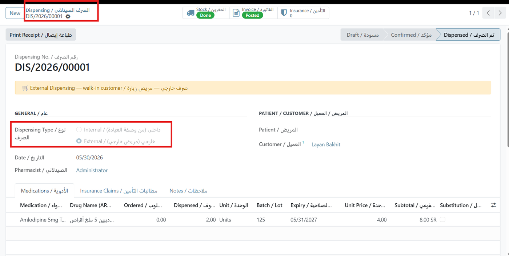
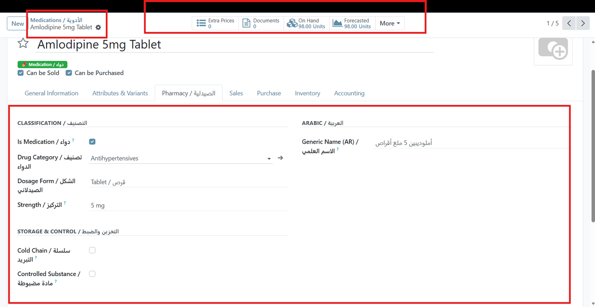
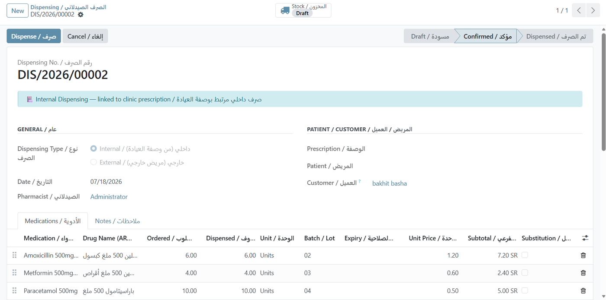
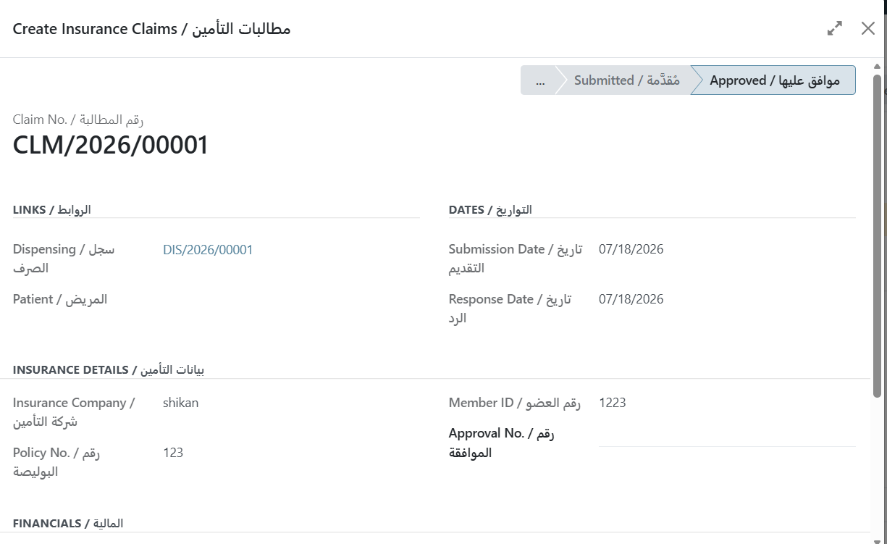
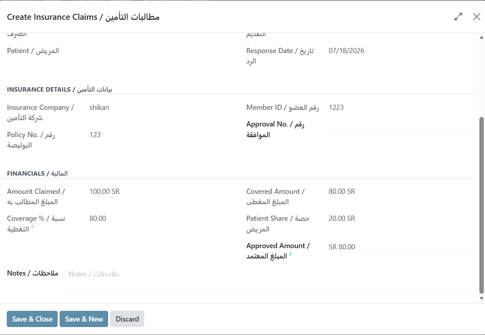
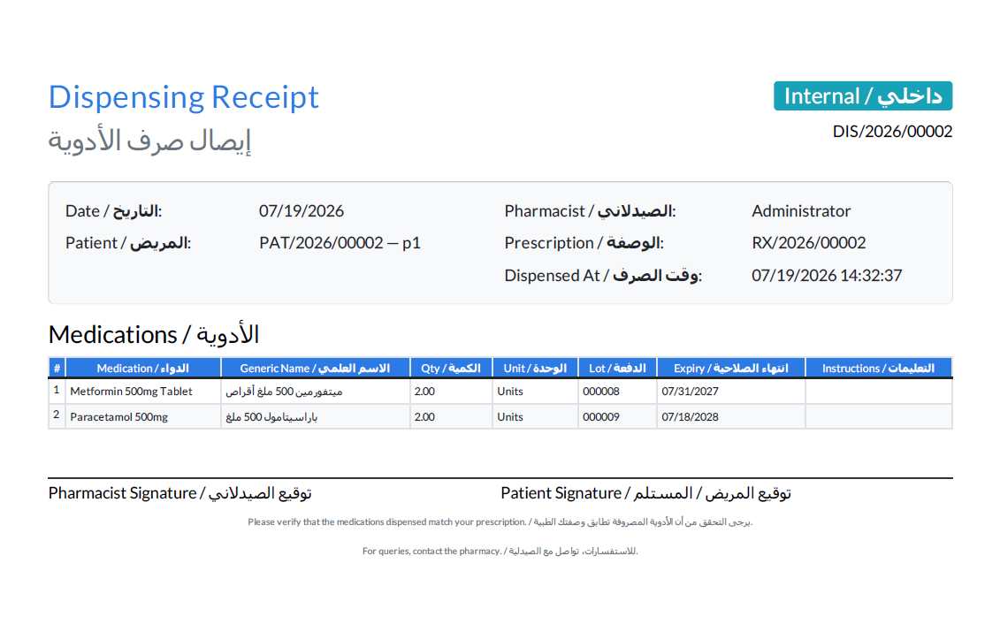

℞
QUINZE Health Pharmacy
Internal and external dispensing with real stock movements, lot and expiry tracking, and insurance claims.
Odoo 17Stock IntegratedLot & ExpiryInsurance ClaimsAuto Invoicing
Overview
Dispense against clinic prescriptions or serve walk-in customers, with real stock movements, lot and expiry tracking, automatic invoicing and a full insurance claim workflow.
Bilingual by design. Every field label, selection value and report renders in English and Arabic together, so a single database serves both an English-speaking administrator and an Arabic-speaking clinician without switching languages. The screenshots below are taken with the interface language set to English.

External Dispensing — A walk-in dispensing, fully processed. The header smart buttons confirm the stock move is Done and the invoice is Posted, while each line carries batch number, expiry date, unit price and subtotal.
Two Dispensing Modes
Internal Dispensing
Started from a confirmed clinic prescription. Lines are pre-filled, quantities validated against what was prescribed, and the prescription is marked partially dispensed or dispensed on completion.
External Dispensing
For walk-in customers and outside prescriptions. Full drug selection and pricing, with an invoice created automatically on confirmation.

Medication Product Fields — A dedicated Pharmacy tab adds drug category, dosage form, strength and the Arabic generic name, plus cold-chain and controlled-substance flags — all on the standard Odoo product.

Internal Dispensing from a Prescription — A dispensing generated from a confirmed clinic prescription. The banner identifies its origin, the prescription and patient links are populated, and each line arrives pre-filled with the ordered quantity, batch number and price — the pharmacist only confirms what is actually handed over.
Insurance Claim Workflow
Draft→Submitted→Approved / Rejected

Approved Insurance Claim — The claim links back to its dispensing and records insurer, policy number, member ID, submission date and response date, with the status bar showing it has reached Approved.

Coverage Split — Entering a coverage percentage derives the covered amount and the patient share automatically, and the approved amount is tracked separately so partial settlements are visible.
Key Features
Real Stock Movements
Each dispensing generates an outgoing stock.picking from a dedicated pharmacy location.
Lot & Expiry Tracking
Built on standard Odoo stock.lot, so expiry control works exactly as your team already expects.
Cold Chain & Controlled Flags
Mark medications requiring refrigeration or subject to controlled-substance handling.
Automatic Invoicing
Confirmation posts an account.move with the correct patient and coverage split.
Bilingual Dispensing Receipt

Printed Receipt — The receipt records the originating prescription, and each line carries its batch number and expiry date pulled straight from the lot — with signature blocks for both pharmacist and patient.
REST API Available
A companion module, QUINZE Health REST API, exposes authenticated JSON endpoints for dispensings and insurance claims — list, create an external dispensing, confirm it, and read claim status from an external system. It is sold separately and requires this module.
Requires: QUINZE Health Base (free), QUINZE Health Clinic, and Odoo Inventory.
صيدلية نظام QUINZE الصحي
إدارة الصيدلية بنمطين للصرف:
- الصرف الداخلي: من وصفة العيادة مع تعبئة تلقائية والتحقق من الكميات
- الصرف الخارجي: للعملاء المباشرين مع فوترة تلقائية
- حركات مخزون حقيقية من موقع الصيدلية
- تتبع التشغيلة وتاريخ انتهاء الصلاحية
- دورة كاملة لمطالبات التأمين مع نسبة التغطية
- حقول دوائية إضافية: الاسم العلمي بالعربية، الشكل الصيدلاني، التركيز، سلسلة التبريد
Technical Information
| Item | Value |
|---|
| Odoo Version | 17.0 Community & Enterprise |
| Dependencies | quinze_health_clinic, stock, account |
| License | OPL-1 |
| Price | €129 |
| Languages | English and Arabic (ar_001), bilingual labels and reports |
| Automated Tests | Included |